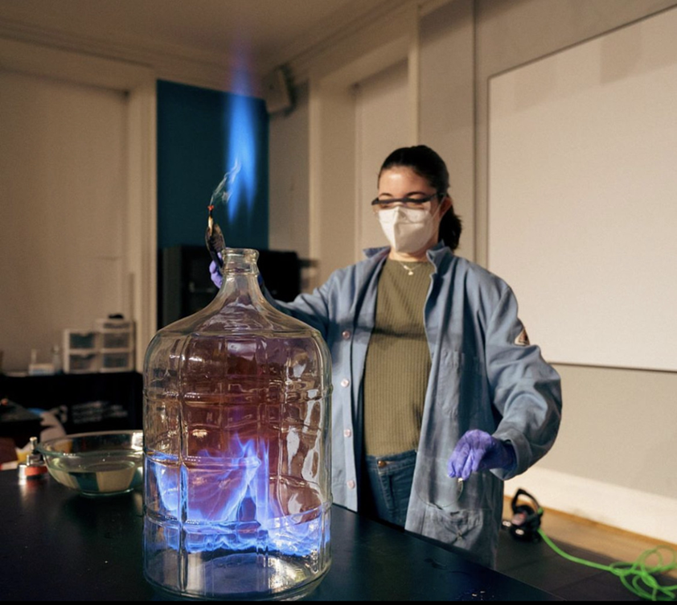

I am currently a Data Science Preceptor postdoc, where I have positions as an adjunct instructor at the University of Chicago and the City Colleges of Chicago. I will be teaching courses in data science, physics, and astronomy at both institutions.
I have always been an educator and I previously spent time as a high school math teacher and later a community college instructor. At Wake Tech Community College, I taught precalculus and a supplemental course on growth-mindset in math. Prior to this, I taught math in Raleigh, NC, at Leesville Road High School, and worked at the Morehead Planetarium and Science Center, where I performed live Science shows. This was one of my most fun jobs, getting to end every show with a liquid nitrogen grand finale!
This video was funded by McDonald Observatory and created by Bevo Productions for an exhibit in the Texas Science and Natural History Museum.
This video was made in partnership with Adler Planetarium and Zooniverse for educators using the new group features.
During my internship at the National Air and Space Museum, I developed materials for the museum's Discovery Carts. I developed hands-on activities representing dark energy, dark matter, and the expansion of the universe. These events were used at events on the National Mall, like the Tour of the Universe.
In the summer of 2024, I focused on science communication on an NSF INTERNship at Adler Planetarium and Zooniverse. One aspect of this internship was creating videos for educators (school teachers, librarians, museum specialists etc.) on how to use new features of the Zooniverse platform. See the video I have created here.
With my current citizen science project, Dark Energy Explorers, I lead workshops for K-12 teachers across the country with McDonald Observatory, and I have developed a lecture tutorial for teachers to use in their classrooms. Through the NASA Citizen Science Seed Funding grant I have advised three undergraduates who have helped with this work. You can find the lecture tutorial, instructor's guide, and demos here in English and in Spanish!
I have also developed curricula for teaching within a planetarium for Fiske Planetarium at CU Boulder and researched teaching climate change for UT Austin's College of Natural Sciences.


A few photos from a virtual school visit at Montessori Middle School with students in 6th to 8th grades. You can find the materials above to use participatory science in your classroom!